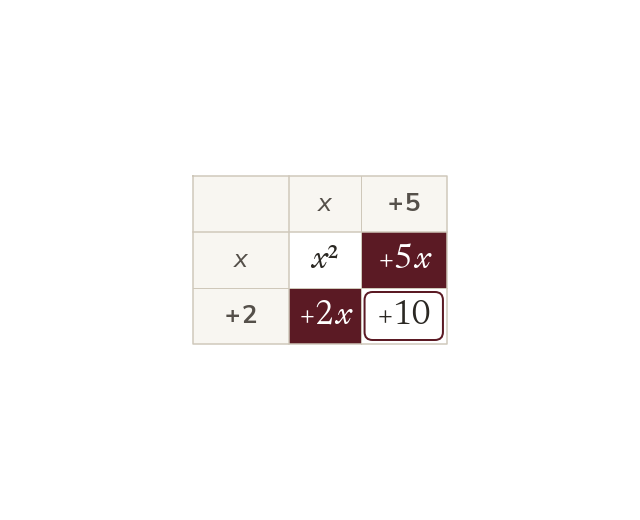
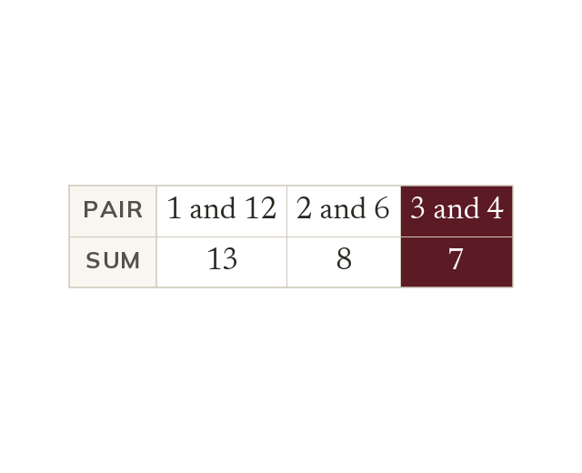
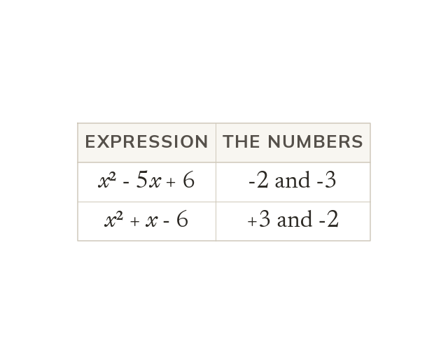
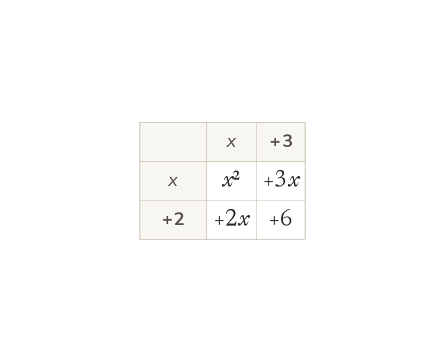

Factorising runs the grid backwards
(x + 2)(x + 5) expands to x² + 7x + 10. Factorising undoes that. The two numbers add to make the 7 and multiply to make the 10.
Factorising turns a quadratic back into the brackets that made it. It is the key that opens quadratic equations next lesson.
Work down the page at your own pace. Write every answer in your book first, then click to check it.
Read each card, then follow the worked examples one step at a time.

(x + 2)(x + 5) expands to x² + 7x + 10. Factorising undoes that. The two numbers add to make the 7 and multiply to make the 10.

List the factor pairs of the constant. Choose the pair that adds to the x coefficient. For x² + 7x + 12, that is 3 and 4.

If the constant is positive, both numbers share the sign of the x term. If it is negative, the two numbers have opposite signs.
Pick an answer. If it's wrong, the feedback tells you which mistake it was.
Read each card, then follow the worked examples one step at a time.

When every term shares a factor, it is taken out before anything else. Then the bracket left behind is factorised as usual.

A factorisation is checked by expanding it back to the original. If the expansion is different, a sign or a pair is wrong.
Pick an answer. If it's wrong, the feedback tells you which mistake it was.
Finished? Next lesson: 10.17.4 Solving Quadratics by Factorising.
Log in, then search for a code to practise that skill.